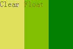
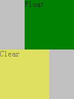
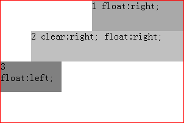

RM8008: IE6 IE7 IE8(Q) 中对浮动元素上 'clear' 特性的解释出现错误，使其自身位置和其后浮动元素的位置与其他浏览器中不同
标准参考
W3C CSS Level 2 Revision 1 第9.5.1节对浮动元素方式的规则中有如下定义：
规则2:左浮动元素的顶外边必须在所有先前的左浮动框的底外边界之下，此规则同样使用右浮动。
规则5:浮动框的顶边不可以高于源文档中先前的元素产生的块或浮动框的顶。
W3C CSS Level 2 Revision 1 第9.5.2节对控制紧邻浮动流—— 'clear' 特性做了规定：
该属性说明了一个元素的框的哪一边不得与其之前的浮动框相邻。 'clear' 属性并不考虑该元素内部或其他 "block formatting context "中的浮动。
间隙（Clearance）以元素 'margin top' 上方空白的方式被引入。它用来把元素垂直（典型情况是向下）推过浮动框。它是一个值。
问题描述
在IE6 IE7 IE8(Q)中，如果 clear 特性被设置在一个浮动的元素上，该浮动元素会与其前边的浮动元素放置在同一行。
在IE6 IE7 IE8(Q)中，如果 clear 属性被设置到一个浮动的元素上，位于其后的浮动元素的外顶边高于该元素的外顶边。
造成的影响
在IE6 IE7 IE8(Q)中，clear 特性被设置在一个浮动的元素上时，造成页面布局错乱。
受影响的浏览器
| IE6 IE7 IE8(Q) |
|---|
问题分析
对于上述两个问题，我们通过以下的测试用例来说明。
分析以下代码：
<div id= "Container " style= "background-color:silver; width:150px; float:left; "> <div id= "Float " style= "float:right; width:100px; height:100px; background-color: green; ">Float</div> <div id= "Clear " style= "clear:right; float:left; width:100px; height:100px;background-color:yellow;filter:alpha(opacity=50);-moz-opacity:0.5; opacity: 0.5; ">Clear</div> </div>
- Container 的宽度为150px，设置 "float:left "是为使容器高度自适应。
- Clear 是含有 'clear' 特性的浮动元素， Float 和 Clear 的尺寸都是 100px*100px。
- 对 Clear 设置 'filter:alpha(opacity=50);-moz-opacity:0.5; opacity: 0.5;' 是为了让Clear可以透明，突出 Clear 把 Float 覆盖的事实。
根据浮动元素位置规则2， Clear 不应该与 Float 处于同一行，应该折行显示。
在各浏览器中效果如下：
| IE6 IE7 IE8(Q) | IE8(S) Firefox Chrome Safari Opera |
|---|---|
|  |  |
分析以下代码：
<div id= "Container" style= "width:300px; height:200px; border:1px solid red; ">
<div id= "DIV1" style= "float:right; width:150px; height: 50px; background-color:darkgray; ">1 float:right;</div>
<div id= "DIV2" style= "clear:right; float:right; width:250px; height: 50px; background-color:silver; ">2 clear:right; float:right;</div>
<div id= "DIV3" style= "float:left; width:100px; height: 50px; background-color:gray; ">3 float:left;</div>
</div>
- Container 的宽度大于 DIV1+DIV3 的宽度和， Container 的宽度小于 DIV2+DIV3 的宽度。
- DIV1 是一个右浮动的元素。
- DIV2 一个右浮动元素，它含有 'clear:right' 特性，可以清除前面的右浮动，可以使 DIV2 位于 DIV1 的下方。
- DIV3 是一个普通的左浮动元素。
根据浮动元素的位置规则5， DIV3 的顶外边不应该高于 DIV2 的顶外边。所以，根据标准推测，当 DIV2+DIV3 宽度大于容器宽度时， DIV3 应该位于 DIV2 的下方；而当 DIV2+DIV3 宽度小于容器宽度时， DIV3 应该与 DIV2 处在同一行。
在各浏览器中效果如下：
| IE6 IE7 IE8(Q) | IE8(S) Firefox Chrome Safari Opera |
|---|---|
 |
 |
可见，
- 在IE6 IE7 IE8(Q)中，如果浮动元素的 'clear' 不为 'none' ( 'clear' 的默认值是 'none' ），那么它自身的位置和处于它之后的浮动元素的位置都会出现兼容性问题。
- 在其他浏览器中，则按照规范进行了正确的处理，不存在此问题
这个差异是由 IE6 IE7 IE8(Q) 中处理 'clear' 特性时的 Bug 造成的，它在 IE8(S) 中被修复。
如果一个页面在 IE6 IE7 IE8(Q) 中被设计，并且触发了该 Bug ，那么这个页面在其他浏览器中的布局将与预期的不符。
解决方案
不要将 'clear' 特性应用在浮动元素上，以免出现上述不兼容的问题。
参见
知识库
相关问题
测试环境
| 操作系统版本: | Windows 7 Ultimate build 7600 |
|---|---|
| 浏览器版本: |
IE6 IE7 IE8 Firefox 3.6 Chrome 4.0.302.3 dev Safari 4.0.4 Opera 10.60 |
| 测试页面: |
RM8008-1.html
RM8008-2.html |
| 本文更新时间: | 2010-07-19 |
关键字
float clear 清除浮动 位置